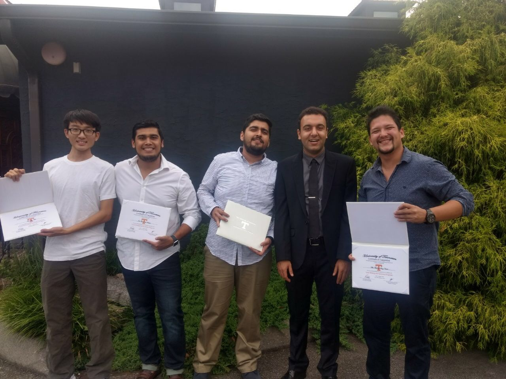

Graduate Teaching Assistant
BAIS 3250: Data Wrangling, (112 students) (Fall 2021), (112 Students)
In progress
BAIS 2800: Foundations of Business Analytics, transitioned to online instruction, (Fall 2020), (90 Students)
Teaching Evaluation: 5.53/6
MSCI 3000: Operations Management (Spring 2019), (122 Students)
Teaching Evaluation: 5.58/6
MSCI 3000: Operations Management (Fall 2018), (102 Students)
Teaching Evaluation: 5.05/6
MSCI 3000: Operations Management (Spring 2018), (55 Students)
Teaching Evaluation: 5.15/6
MSCI 3000: Operations Management (Fall 2017), (55 Students)
Teaching Evaluation: 4.3/6
Sample of Students Evaluations Related to Discussion (Lab) Classses
Following your in class guides helped me get an 81 on the midterm rather than the 67% average for the class. I like how you explain the difficult concepts in class so we know how to do it for the exam. Only comment is that due dates and more instruction could have been discussed for the projects!
My experience in Jafar's class has been my best experience so far with a TA. He was very clear with explanations and offered many opportunities for students to receive help/ask questions when they needed it.
Jafar does a good job in trying to explain something in multiple ways, as well as helping the visual learners by writing on the whiteboard.
I thought Jafar was a good teacher overall. He was really relaxed and funny which helped make it easier to pay attention. I normally don't learn a lot from discussion sections, but this class actually helped me a lot. The examples were great.
Jafar makes the material easy—no overcomplicated definitions and explanation, just examples that actually help our learning.
He was the absolute best with working with students and understood our problems that we would have within excel and helped solve them
Very good communicator and would try to engage the class even though the class wasn’t interested or willing to answer questions or give anything back.
Jafar, you were a big help when I was struggling and you were willing to stay after class to talk to me about quizzes and stuff I was confused on. Really appreciate it
I felt that I learned much more in labs than I did watching lectures. But then, the quizzes were sometimes different or more challenging than anything we had worked through in class or EAA/HW. There was one unit that I breezed through lab, aced the EAA and HW on the first try, but then bombed the quiz.
I liked how J Namdar would walk around every once and a while during the class period to ask if everyone was doing alright. This helped make sure that no questions were missed and everyone felt okay with the material.
The way this class was taught was incredible this semester. My TA did an excellent job going through every topic and making sure we all had a solid and proper understanding of what we needed to do.
One of the best TAs I have had. I would not have learned much in this class if it hadn't been for my discussion section!
He was very friendly and taught us the more conceptual way of understanding the material instead of plug and chug a formula
He is funny instructor and tries to explain materials really well. He encourages people to participate in the class and answers questions very well.
Jafar is a knowledgeable instructor and is an effective communicator with students.
*** Full student review data available upon request!
Tutoring and Supervising at the University of Tennessee, Knoxville
Supervisor of Lean Enterprise Summer Program (LESP) at University of Tennessee, Knoxville (UTK), (Summer 2017), (7 Students)
Supervisor of Lean Enterprise Summer Program (LESP) at University of Tennessee, Knoxville (UTK), (Summer 2016), (20 Students)
